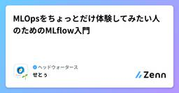
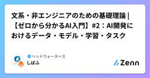
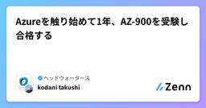
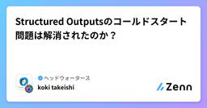
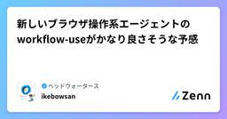
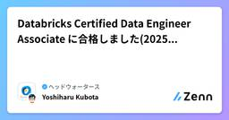
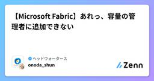

ヘッドウォータースのフィード
https://zenn.dev/p/headwaters
株式会社ヘッドウォータースのテックブログです。 AIエージェント、生成AI、LLM、Azureのサービスや資格、IoT、XR系などData&AIとApp modernizeに関して幅広く投稿します！
フィード

MLOpsをちょっとだけ体験してみたい人のためのMLflow入門
ヘッドウォータースのフィード
MLOpsってなんやねん。本記事では、「個人で作成した機械学習モデルに手書きでプチMLOpsを実装する流れ」 を記載します。MLOpsの概要記事は巷にたくさんあるのですがどれもプロダクションレベルの印象がありました。今回私はMLOpsの一連の流れや雰囲気を掴みたいだけだったので、とても小さな規模であえてコードからやってみました。そのため、完全な運用プロセスまでは行っていません。MLOpsと呼んでいいのかわからない、MLぉ...くらいです。ご了承ください(_ _)ちなみに「MLOpsとは〜？」系の記事はこちらがおすすめhttps://udemy.benesse.co.jp/...
1日前
GraphRAGの進化 -> LightRAG -> PathRAG
ヘッドウォータースのフィード
はじめにナレッジグラフをベースにしたRAGシステムでは、ノードとエッジが膨大になり、検索の際に類似度の高いTop-Kのノードとその周辺のノード-エッジを取ってくる手法だと余計な情報が多くなり、LLMのハルシネーションに繋がったり、グラフ自体を見てもユーザーは関係性が理解しにくいという問題があります。MicrosoftのGraphRAGは、コミュニティを検出し、近くのノードを並べて回答します。ローカルサーチ、グローバルサーチにしてもかなり富豪な検索手法です。LightRAGはキーワード＋局所グラフだけを送るため、GraphRAGのコミュニティ全文送信に比べトークン消費が少な...
2日前

文系・非エンジニアのための基礎理論 |【ゼロから分かるAI入門】#2：AI開発におけるデータ・モデル・学習・タスク
ヘッドウォータースのフィード
前書き：このシリーズについて「文系・非エンジニアのための基礎理論」では、“知らなくても分かる”をコンセプトに、専門知識が無くても技術的な話をそこそこ深く理解できるような記事を作成していきます。このシリーズでは以下のことをお約束します！事前に押さえておくべき知識があれば冒頭でご紹介します非日常的な英単語や専門用語、義務教育に登場しない数学記号は注釈無しに使いません こんな方に是非！会議などで技術的な話になるとついていけない専門書を読むと英単語や専門用語や数式がハードルになるとにかく簡単に知りたいけど、あまり浅い理解では満足できない この記事の要点この記事...
2日前

Azureを触り始めて1年、AZ-900を受験し合格する
ヘッドウォータースのフィード
概要Azureを触り始めて1年経ったので AZ-900: Azure Fundamentals くらいは余裕で取れるやろ、という気持ちで受験しました。事前勉強無しでとりあえずMS-Learnの練習評価を受けたところ、80%弱（合格ライン）取れたのでその日のうちに4日後の試験に申し込みました。3日間終業後2時間ずつほど勉強して受験したところ742点（700点以上で合格）でギリギリではありましたが合格できました。ということで、今回は、AZ-900とは自分の経験勉強方法という形でまとめたので、同じような立場の方に気軽にAZ-900を受けようと思ってもらえれば。 AZ-9...
3日前

Structured Outputsのコールドスタート問題は解消されたのか？
ヘッドウォータースのフィード
はじめにLLMでjsonを出力させる際に、プロンプトにjsonのスキーマを書いて制御するのと、Structured Outputの速度って直感的にはStructured Outputの方が早いのかなと思ってo3に聞いてみました。 o3の回答方法仕組み1 回の API 呼び出しのレイテンシ総合的な開発・運用コスト備考① プロンプトで「JSON で返して」と書く単なる自然言語指示速い（追加オーバーヘッドなし）失敗時のリトライやパース失敗が多く、結果的に遅延が膨らみやすい出力が壊れると業務ロジック側で再試行・修正が必要② JSON mode（"...
3日前
【Dify】- エージェントを作ってみる
ヘッドウォータースのフィード
執筆日2025/5/26 やることDifyを使ってエージェントを作成してみる Difyの「エージェント」とは？Difyにおける「エージェント」とは、ユーザーの指示に基づいて自動的に作業を行うシステムのことです。ユーザーからの指示を受けると、事前に設定した「ツール」を使ってエージェントが適切な対応を選択・実行します。 今回作成するエージェント今回のエージェントは、ユーザーが質問を入力すると、その内容に基づいて適切なツールを使用して回答を提供するものです。Azureに関する質問の場合:Wikipediaのツールを使って検索。その他の質問の場合:GPT...
3日前

新しいブラウザ操作系エージェントのworkflow-useがかなり良さそうな予感 169
169
ヘッドウォータースのフィード
https://github.com/browser-use/workflow-useBrowser Useから新しいブラウザ操作系エージェントが登場しましためちゃくちゃ魅力的だったので紹介します。 従来のブラウザ操作系エージェントbrowser-useに限らず、従来のブラウザ操作系エージェントはユーザーからの自然言語な指令をもとにブラウザを操作します。AIエージェントは画面キャプチャ + DOMの取得 → キャプチャを解析 → クリックすべき要素を推論 → playwrightで操作をループしてタスクを行います。現在僕もよく使っているのですが、何点か課題があります。 ...
4日前

MCPをちょっとだけ理解できるかもしれない記事
ヘッドウォータースのフィード
執筆日2025/5/24 はじめに完全攻略ガイド！みたいな感じにしたかったのですが思ったより完全攻略できなかったので、ちょっとわかったことを共有します。このブログで話すことは以下です。言語はpythonを使います。MCPってたぶんこんな感じFastMCPを使ってMCPサーバーをpythonで立ててみるInspectorを使ってMCPサーバーをWeb GUIでデバッグしてみるOpenAI の AgentSDK を使ってGPTとMCPサーバーのやり取りを実践してみる 概要 MCPとはModel Context Protocol（Model Capabil...
5日前

Databricks Certified Data Engineer Associate に合格しました(2025年5月)
ヘッドウォータースのフィード
Databricks Certified Data Engineer Associate についてデータエンジニアDatabricks Certified Data Engineer Associate ←今回受験した試験Databricks Certified Data Engineer ProfessionalデータアナリストDatabricks Certified Data Analyst AssociateML エンジニアDatabricks Certified Machine Learning AssociateDatabricks Cer...
5日前

【Microsoft Fabric】あれっ、容量の管理者に追加できない
ヘッドウォータースのフィード
はじめにAzure PortalからFabricリソースを選択すると、左側に設定 > 容量の管理者があり、ここから名前の通り容量の管理者の追加ができます。容量の管理者になると、Fabricの管理ポータルから容量の設定をすることができ、ワークスペースに容量の割り当てなどができるようになります。https://learn.microsoft.com/ja-jp/fabric/admin/capacity-settings?tabs=power-bi-premiumhttps://zenn.dev/headwaters/articles/d83de0e0a7833d 本題...
5日前

それ、Jetsonじゃないといけませんか？
ヘッドウォータースのフィード
今あなたが検証したいのは、量子化手法ではなくアルゴリズムを用いた課題解決の可能性ではないでしょうか？ 浮動小数型(Float)から整数型(Int)への変換、甘く見ていませんか？Jetsonシリーズ、NanoやOrin Nano、AGX OrinはエッジでAIを使うとなると盲目的に選定されることが多いのではないかと思います。確かに、Jetsonは高性能な組込みプラットフォームであり、高速な推論が可能です。ただし条件があり、Int8やInt4といった整数型のモデルを使用した場合に限ります。しかーし、最先端のアルゴリズムの多くはFloat32で実装されており、Jetsonを高効率で使...
5日前

A2Aとは？
ヘッドウォータースのフィード
執筆日2025/5/23 1. 結論異なるベンダーやフレームワークのエージェントと安全かつ効率的に接続を行うためのプロトコルです。 2. A2Aの概要A2Aは「Agent to Agent」の略称で、エージェント同士が共通の言語でタスク（仕事依頼）や成果物をやり取りできるように定められたプロトコルです。2025年4月にGoogleが仕様を公開し、LangChain、Salesforce、Cohere、Microsoftなど50社以上が参加・貢献しています。 3. なぜA2Aが必要か 背景と課題企業や組織では、問い合わせ対応、業務自動化、データ分析などにA...
6日前

【Azure AI Content Safety】- ブロックリストについて
ヘッドウォータースのフィード
執筆日2025/5/22 参考資料https://learn.microsoft.com/ja-jp/azure/ai-services/content-safety/quickstart-blocklist?tabs=visual-studio%2Cwindows&pivots=programming-language-foundry-portal Azure AI Content Safetyとは？Azure AI Content Safetyは、アプリやサービス内のユーザー生成コンテンツやAI生成コンテンツを分析し、不適切な表現や有害な内容（性的、暴力...
7日前

【Microsoft Build 2025】- Model Routerについて
ヘッドウォータースのフィード
執筆日2025/5/20 Model Routerとは？Model Routerとは、AIモデルの「自動選択・自動ルーティング」機能です。複数のモデルが共存する環境で、ユーザーが都度どのモデルを使うかを決める必要はありません。Model Router が プロンプトの内容や最適化条件に応じて、最適なモデルを自動選定しリクエストをルーティングしてくれます。 機能の詳細機能説明自動ルーティング利用可能な中から最適なモデルにクエリを振り分け最適化パラメータ速度・コスト・品質に応じたルーティング制御フォールバックと冗長性応答エラーや高レ...
9日前
【Microsoft Build 2025】- GrokがAzure AI Foundryに登場！
ヘッドウォータースのフィード
執筆日2025/5/20 情報源https://devblogs.microsoft.com/foundry/announcing-grok-3-and-grok-3-mini-on-azure-ai-foundry/ なんとxAIの最新大規模言語モデルGrok 3,Grok 3 mini が Azure AI Foundry 上で利用可能に！2週間限定の無料プレビューを開始。以後、有償提供に切り替わるとのこと。きたー！すごいツーショットhttps://www.youtube.com/watch?v=xqXa-i-Fr-M&embeds_referri...
9日前
【Microsoft Build 2025】- Copilot studioアップデート情報
ヘッドウォータースのフィード
執筆日2025/5/20 はじめにMicrosoft Build 2025が始まりましたねー。現地参加はしていないです！！（行きたい..）AI中心にいろいろなサービスアップデートが来ています。今回は、Copilot Studioの5/20時点のアップデート内容をまとめます データソースhttps://www.microsoft.com/en-us/microsoft-copilot/blog/copilot-studio/multi-agent-orchestration-maker-controls-and-more-microsoft-copilot-studi...
9日前
"SSH Config"を実行した際に、"Pip failed with status code 3221225477"のエラー表示の対処法
ヘッドウォータースのフィード
はじめに備忘録として、記事にします。PowerShellを起動して、Azureログイン。下記のコマンドを実施して、Azureから"SSH Config"のダウンロードしようとした際に起きたエラーとその対処方法を共有します。※"SSH Config"・・・SSH経由でのリモートサーバーの接続する際に利用される設定ファイル 前提VMを構築していること 実行コマンドとエラー内容実行コマンドaz ssh config --file $HOME\.ssh\config --resource-group <リソースグループ名> --name <仮...
10日前
Microsoft Learnの言語を簡単に切り替える
ヘッドウォータースのフィード
概要MS Learnで勉強していて日本語で読んでいたのにリンクに飛んだら英語ページで一々言語切替するのがめんどくさい、という経験はないでしょうか。 解決今までURLのen-usをja-jpに書き換えていたのですが、拡張機能作ろうかなと思ったところ、既に公開している方が複数いらっしゃいました。（それはそう）https://microsoftedge.microsoft.com/addons/detail/msdocs-easy-lang-switch/pmfbfkopllbahmjflhfbeccgigoedfpchttps://microsoftedge.microsof...
10日前
Obsidianは"個人プロジェクトのドキュメント整理用"としてとても優秀だと思う。
ヘッドウォータースのフィード
話題のObsidianを触ってみました。最近よく耳にする「Obsidian」。"第二の脳"として使えると評判で、情報管理・グラフビュー・AI連携など、さまざまな文脈で語られています。https://obsidian.md/一見すると「何でもメモできそう」なObsidianですが、実際に使ってみると得意・不得意がハッキリしていると感じました。本記事では、Obsidianを使って感じた 「使えそうな点」と「微妙に感じた点」 を主観多めに率直に紹介します。ちなみにここ1年間のGoogleトレンドの様子。 結局Obsidianって何？Obsidianとは、「知的作業のための...
10日前
Swift Translation APIとGoogle翻訳の精度を比較してみた
ヘッドウォータースのフィード
2024年9月から、Apple製品に標準で搭載されている翻訳機能がAPIとして提供されました。今まではDeepL APIとかGoogle翻訳API、もしくは生成AIにリクエストを飛ばす必要がありましたが2,3行のコードで無料で翻訳機能を実装することができるようになります。※ただしiOS18以上が条件です。https://developer.apple.com/jp/videos/play/wwdc2024/10117/精度はどんな感じか検証してみました。 評価対象Swift Translation APIGoogle翻訳 評価方法以下の二つの観点から評価を行う...
10日前